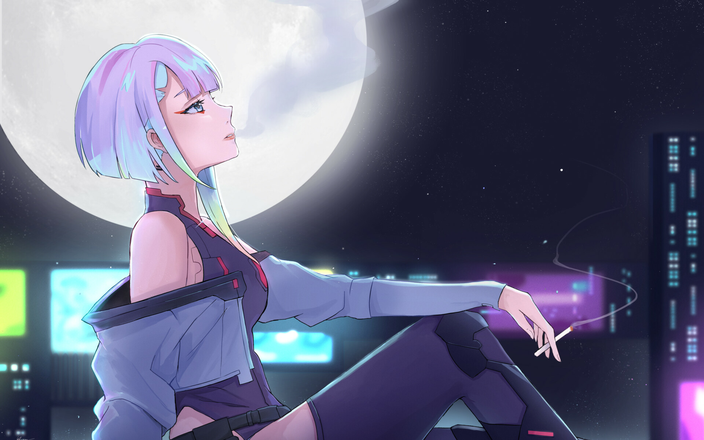

About Lucy
Lucy is a mysterious netrunner from Night City. She is quite introverted and doesn't like to talk much about her past. Although she looks innocent, she won't hesitate to kill a person in a heartbeat if they tick her off. Lucy also considers Night City a prison, and dreams of one day leaving it for the Moon.
Lucy smoking
Lucy's Characteristics
- Lucy is a young woman with naturally white hair and red-purple eyes.
- She wears light red eye and lip makeup.
- Her eyes appear to reflect with the colors of her hair.
Lucy's Friends
Lucy has some awesome friends. In 2075, Lucy met Kiwi, who mentored her and introduced her to Maine and his edgerunner crew. She later became the secondary netrunner of the crew.